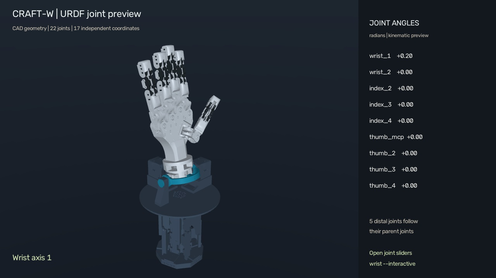
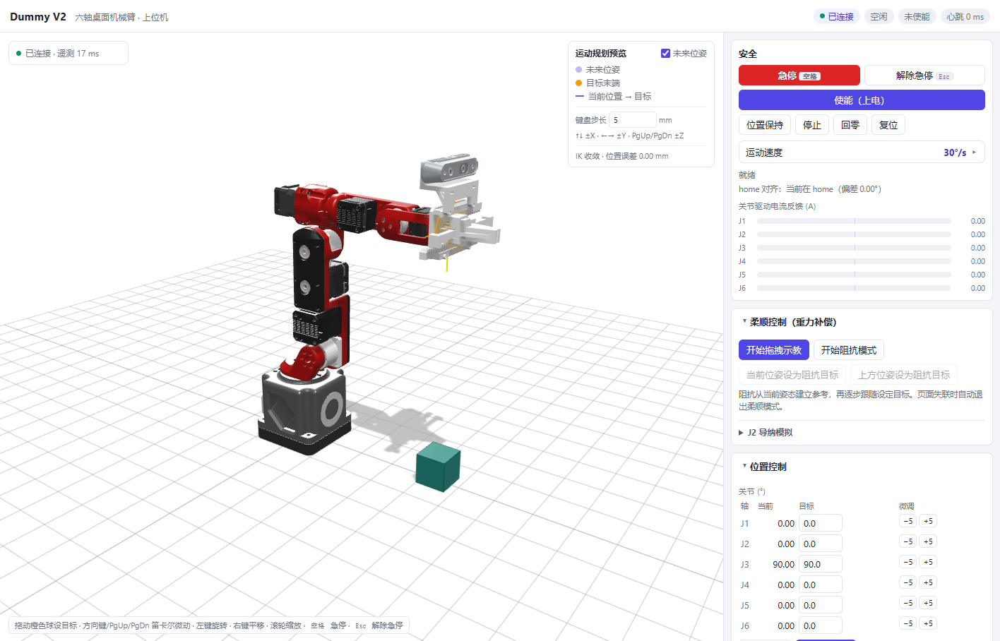
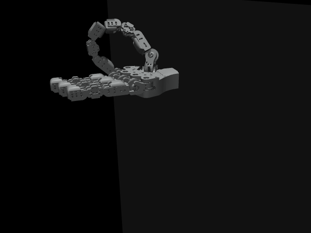
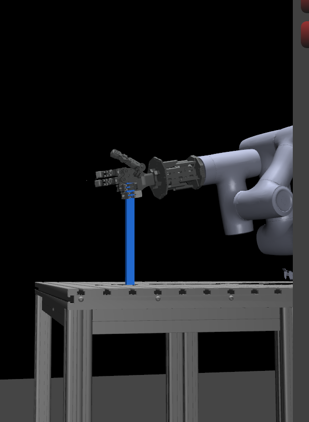

URDF / JOINT CONTROLSDEXTEROUS WRIST
CRAFT-W
URDF & Wrist Demos
23 个连杆、22 个旋转关节、17 个独立坐标。包含关节滑块、ROS 2 描述包，以及倾倒、挥锤和扫桌面的腕部仿真。
YUJIE PANG / ROBOTICS RESEARCH
Undergraduate Researcher · Mechanical Engineering · SUSTech
从 CAD 与 URDF 到控制界面和操作演示，我把机器人模型、遥操作与策略学习连接起来。最近在做 CRAFT-W 腕部操作，以及 Dummy V2 的模型与网页控制。

Dummy V2URDF & browser controlCRAFT-W / WRIST MANIPULATION
倾倒、挥锤、扫桌面。以腕部动作完成末端朝向调整、出料和短行程接触。
腕部倾斜并小幅摆动，让颗粒落入接盘，再返回端持姿态。
握住扫描锤子，沿四指延伸方向挥动腕部，完成敲钉动作。
通过腕部运动保持刷毛与桌面接触，将碎屑推入收集区域。
三段视频均为原速脚本仿真，采用固定支撑和理想刚性握持。倾倒使用颗粒代理。挥锤和倾倒场景中的 CR3 保持固定，腕部采用暂定 ±15° 的双轴串联近似。
Clone the CRAFT-W repository and use Python 3.12. In the viewer, expand Control to adjust the 17 independent joint angles.
python -m pip install -r requirements-viewer.txt
python scripts/launch_demo.py wrist --interactive
python scripts/launch_demo.py cup-pour
python scripts/launch_demo.py hammer-nail
python scripts/launch_demo.py brush-sweepDUMMY V2 / MODEL & CONTROL INTERFACE
基于 Dummy V2 平台，连接机械臂描述、夹爪与相机模型，以及本地网页上位机。当前默认装配包含夹爪、深度相机和支架。
图片来自当前模型的 mock 会话。J1–J5 控制机械臂姿态，J6 驱动夹爪，相机随 J5 运动。HostApp 源码目前维护在本地，硬件功能仍在验证中。
ROBOTICS / SELECTED WORK
从机械结构、机器人描述与控制界面，到遥操作、数据集与策略验证。这里收集持续推进的机器人项目。

URDF / JOINT CONTROLS23 个连杆、22 个旋转关节、17 个独立坐标。包含关节滑块、ROS 2 描述包，以及倾倒、挥锤和扫桌面的腕部仿真。
将含夹爪、相机与支架的 URDF 接入本地网页上位机，连接关节与笛卡尔控制、IK 预览、示教和标定界面。
 REAL WORLD / CONTACT
REAL WORLD / CONTACT基于 MuJoCo Metal–Rubber 接触场景，用动作块 PPO 微调预训练 ACT 策略，研究接触奖励、KL anchoring 和策略适配。
View repository ↗ Featured / active
Featured / active把 CR3 机械臂、CRAFT 灵巧手、MediaPipe / HaMeR 和 MuJoCo 接成一条可运行的单目遥操作链路，并持续推进到受保护的 15 电机 Sim2Real。
View showcase ↗ POLICY / ROLLOUT
POLICY / ROLLOUT双臂 quad-insertion 环境、LeRobot 数据转换、ACT 推理和 MuJoCo / PPO 验证。
View repository ↗ OPEN
OPEN 15-DOF FIST
15-DOF FIST
PINCH用优化式重定向把 MediaPipe 手部关键点映射到 20 关节仿真模型，同时保留 15 个独立实机变量。
Ask about the project ↗面向新能源电池包自动化产线的制造执行系统，覆盖生产计划、工序执行、质量管理、库存和产品全流程追溯。
Project details ↗整理可复用的 CR3 MuJoCo XML / MJCF、URDF、Xacro 和网格资源，服务于后续控制与仿真任务。
View repository ↗
集中管理实验配置、轨迹、结果、图表和论文材料，把一次次硬件试验沉淀成可复现的研究记录。
Explore GitHub ↗
CR3 机械臂与 CRAFT Hand 的 MuJoCo 遥操作仓库，包含小键盘笛卡尔控制、MediaPipe 手部跟踪和躯干示教流程。
View repository ↗
基于 TCP/IP 的 Dobot 六轴机器人 ROS2 与 MoveIt 开发、通信和控制实验。
Reference project ↗
围绕数据集、模仿学习和策略复现搭建的实验集合，连接真实示教轨迹与可评估的 policy rollout。
Explore GitHub ↗
RESEARCH / PROJECT TIMELINE
从工业视觉到灵巧操作，我把每个项目都当作一条可以继续延伸的研究线。
在 Metal–Rubber 接触场景中，用 PPO 微调预训练 ACT 策略，研究接触奖励、KL anchoring 与策略适配。
ACT · PPO · Contact RL将 CR3、CRAFT Hand、MediaPipe / HaMeR 和 MuJoCo 连接成可运行的单目遥操作链路。
Teleoperation · MuJoCo · Sim2Real围绕 15 电机 CRAFT Hand，推进重定向、硬件控制、动作数据和真实机器人验证。
Dynamixel · Retargeting · Hardware整理可运行的腕部 URDF 与操作演示，并将 Dummy 的装配模型、FK/IK 和控制界面连接起来。
Robot models · Wrist demos · Browser controlSKILLS / TOOLBOX
我喜欢把复杂系统拆成可以验证的小环节：先有几何和资产，再有物理和控制，最后让策略在真实世界里接受检验。
ABOUT / EDUCATION
我是 Yujie Pang，南方科技大学机械工程专业本科生，专注于灵巧操作、遥操作、仿真和模仿学习。我的项目从 CR3 + CRAFT Hand 的控制链路出发，延伸到 PAC-ACT 接触强化学习与真实机器人验证。
我也参与工业缺陷检测和机器人系统研究：包括 CSD-DETR、EfficientAD、4-DOF 机械臂、图书分类回收机器人，以及 CoreXY 3D 打印机设计。
理论力学 · 材料力学 · 机械原理 · CAD 与工程制图 · 机械制造工程实践 · 产品设计实践 · 高等数学 / 常微分方程 · 线性代数 · C 程序设计 · 电路基础